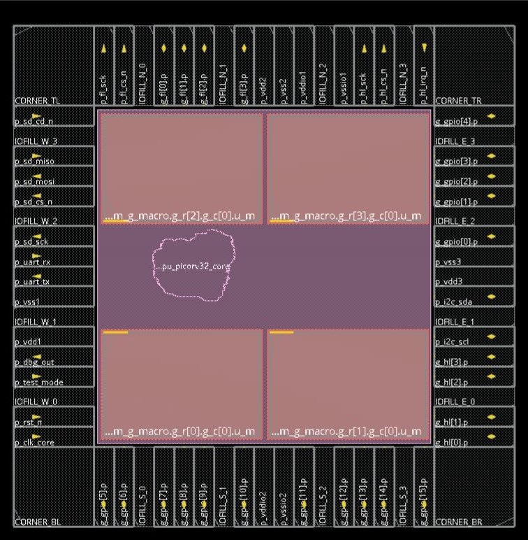
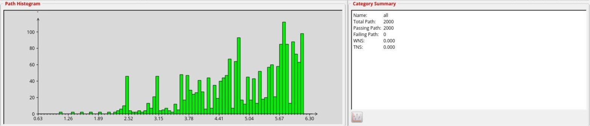
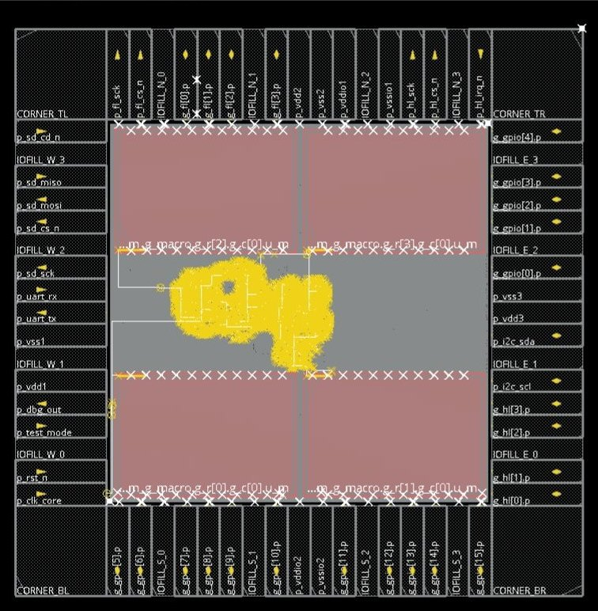
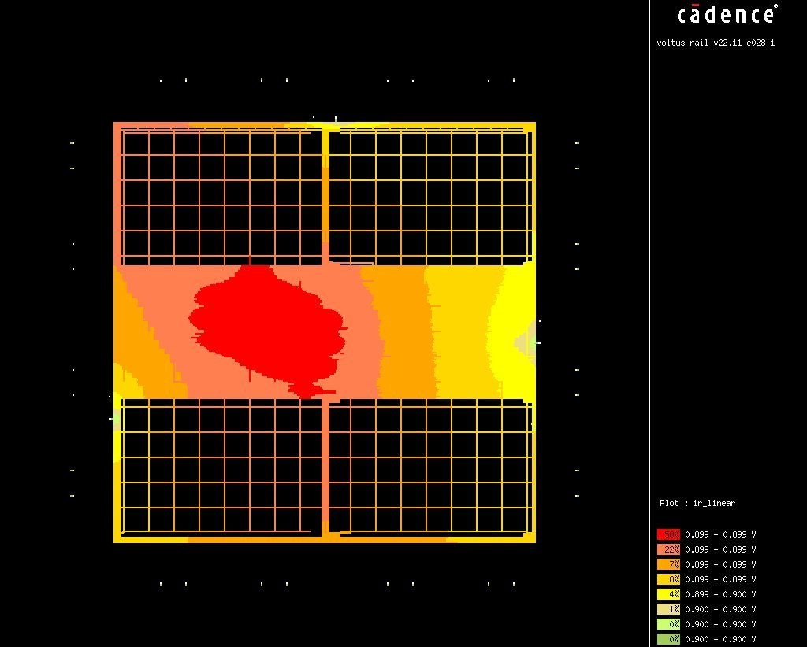
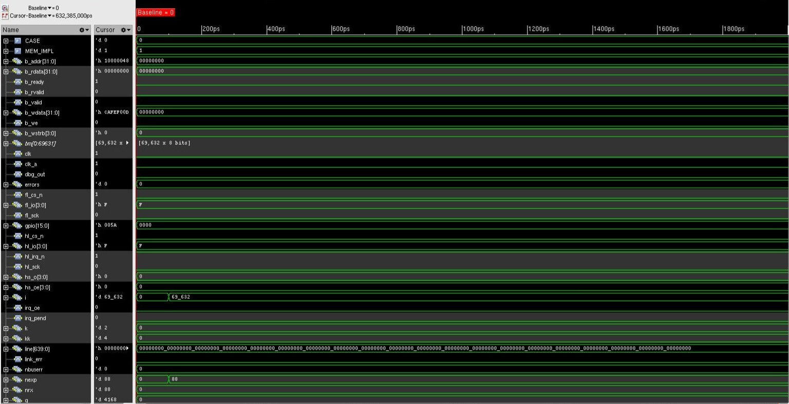
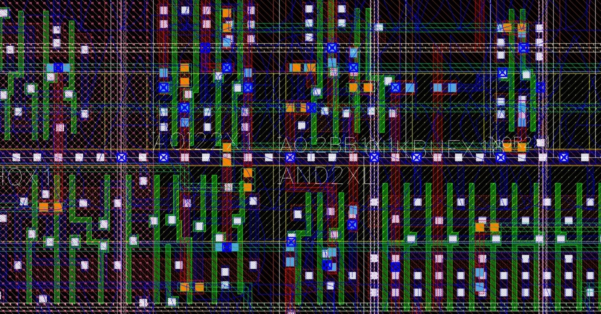

RISC-V controller chip (MCU)
A small RISC-V microcontroller ASIC with my own peripherals and C firmware: the companion chip that drives V1 and V2.
Screenshot proofs
All pictures are of the final layout.







Overview
The controller is a complete microcontroller chip built around the open-source PicoRV32 RISC-V core (RV32IMC with multiply / divide and interrupts). Everything around the CPU is my own RTL: the Wishbone bus, UART, SPI SD card, I2C, GPIO, timer, interrupt controller, a QSPI flash reader with a read cache and a host-link master that sends commands to the V1 / V2 accelerator chips.
It boots from an 8 KB ROM, runs C firmware compiled with RISC-V GCC from a 128 KB on-chip SRAM, and was taken through the same full sign-off as the accelerator chips. The same subsystem is built into V3.
This is an academic practice design on Cadence's generic GPDK045 45 nm PDK. It is fully signed off in the Cadence tools but it has not been fabricated. The SRAM macros are my own placeholder models (behaviour, estimated timing / area / power, outline and pins), because the generic PDK has no memory compiler.
The 128 KB SRAM is four 8192 × 32 macros with byte enables; see Memory design.
Headline numbers
Architecture
| Block | What it does |
|---|---|
| CPU | PicoRV32, RV32IMC, barrel shifter, hardware multiply / divide, interrupts (unmodified open-source core) |
| Memory | 8 KB boot ROM + 128 KB SRAM (4 × 8192 × 32 macros with byte enables) |
| Bus | Wishbone interconnect with 15 slave slots |
| Peripherals (own RTL) | UART, SPI SD card, I2C (100 / 400 kHz), 16 GPIO, timer, interrupt controller |
| External memory / links | QSPI flash reader with 8-word read cache; host-link master to the accelerator chip |
| Chip top | reset synchroniser and 52 I/O pads (7 input, 9 output, 26 bidirectional, 10 power) |
Key specifications
| Parameter | Value |
|---|---|
| Technology | GPDK045 (Cadence generic 45 nm PDK), gsclib045 standard cells, giolib045 I/O pads |
| Die size | 1.5 × 1.5 mm (core-limited by the 4 SRAM macros) |
| Core area | 1.0 × 1.0 mm |
| Pads | 52 = 42 signal + 10 power |
| Cells | 20,815 after synthesis; 23,667 standard cells after P&R incl. clock tree (56,496 µm²), core density 35.7 % |
| Synthesis area | 1.385 mm² incl. pads (pads 748,800 µm², SRAM macros 584,804 µm², logic about 51,700 µm²) |
| CPU size | PicoRV32: 9,846 cells, 26,565 µm² (in the core-level synthesis) |
| Memories | 8 KB boot ROM (logic) + 128 KB SRAM as 4 macros |
| Clock | 100 MHz |
| Supply / corners | 1.0 V nominal core library; signed off at 0.9 V / 125 C (slow, setup) and 1.1 V / 0 C (fast, hold) |
| Firmware | C, RISC-V GCC (rv32imc), own start-up code, linker script and interrupt entry |
Design flow
All steps use Cadence tools on a university server; HLS and firmware builds ran on a PC.
- RTL design: Verilog RTL; the neural-network engines were generated with Vitis HLS from C++ and checked bit-exact against a Python golden model.
- RTL simulation: Xcelium (and Vivado xsim on the PC) with my own board models: SDRAM, sync SRAM, QSPI flash, UART, SD card, I2C, display capture.
- Synthesis: Cadence Genus to the gsclib045 standard cells, 100 MHz core clock, slow corner.
- Place and route: Cadence Innovus: pad ring, floorplan, power grid, placement, clock-tree synthesis, routing, post-route optimisation.
- Physical verification: Cadence Pegasus DRC with the full GPDK045 rule deck, and Pegasus LVS (layout against netlist).
- Static timing: Cadence Tempus, SI-aware, with extracted parasitics: setup in the slow corner, hold in the fast and slow corners, plus every design-rule check type (slew, capacitance).
- Power and rail analysis: Cadence Voltus: power with real gate-level activity, static IR drop, electromigration (EM) and dynamic IR drop.
- Gate-level sign-off simulation: The routed netlist simulated again in Xcelium, with and without the routed delays (SDF back-annotation, all timing checks on).
Results
| Check | Result |
|---|---|
| Pegasus DRC (full GPDK045 deck) | clean (29 foundry-deck via-stack hits on the first run, fixed by limiting those nets to Metal5); only the expected substrate soft checks |
| Pegasus LVS | MATCH (46 pins, 58,012 nets) |
| Tempus sign-off timing (SI on) | setup WNS +1.094 ns, hold WNS +0.050 ns, TNS 0, 0 violators of every check type; 122 slew violators at the start were repaired |
| Power (Voltus, real activity, slow corner) | 1.15 mW |
| Static IR drop (budget 45 mV) | VDD ~1 mV (0.899 V minimum), VSS 1.1 mV: 45x margin |
| Electromigration (Voltus) | PASS: worst J / Jmax 0.340 (VDD), 0.319 (VSS); 0 pieces over the limit |
| Dynamic IR drop (budget 45 mV) | PASS: worst VDD drop ~16 mV, VSS bounce 16.8 mV |
| Post-route gate-level simulation | PASS: C boot firmware on the routed netlist, 88 / 88 UART bytes, done at 412 us |
| Gate-level simulation with routed delays (SDF) | PASS: 88 / 88 UART bytes, 0 timing-check violations; 100 % of path delays and 99.4 % of timing checks annotated |
Problems solved
Synthesis deleted the pads. Without a preserve setting Genus optimised 15 input / output pads away as plain buffers and removed the 10 power pads. Preserving the pad cells kept all 52.
An interrupt ran twice. PicoRV32's default latched-interrupt setting re-latched my level-sensitive interrupt lines during the handler, so the timer handler ran twice. Setting the latched mask only for the CPU-internal sources fixed it.
Simulation start-up with real delays. With SDF delays the clock net is unknown for the first 0.64 ns and corrupted the CPU register file, which has no reset. This is a simulation start-up effect, not a chip bug; the test initialises those flops before the first real clock edge.